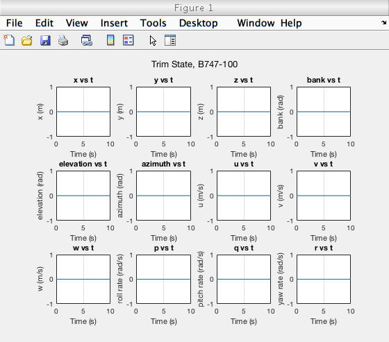
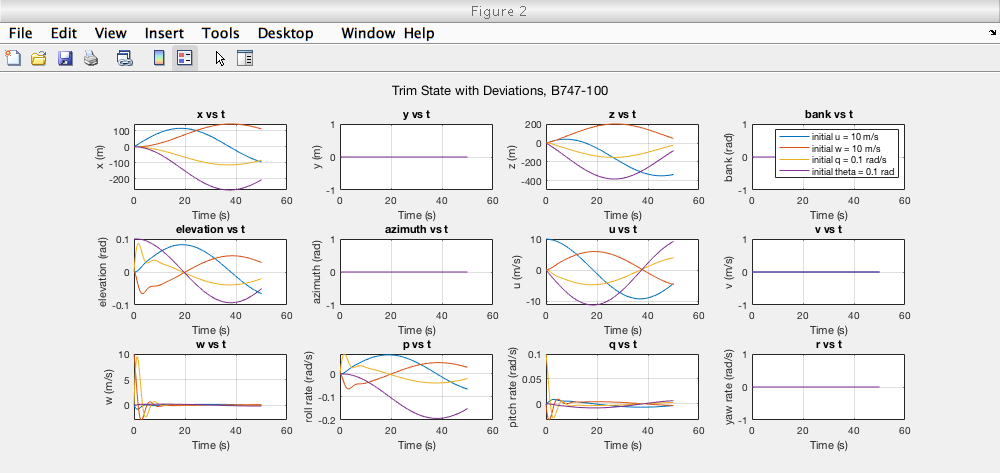

Contents
ASEN 3128 - Assignment 07 - Main
Dimensional Derivatives / B747-100 dynamics
Author: Margaux McFarland Collaborators: Robert Redfern Date: 10/24/19
close all; clear all; clc; %givens for B747-100 case II zeta = deg2rad(-6.8); %radians, angle from stability frame W = 2831737.87; %N, weight g = 9.81; %N, gravity m = W/g; %kg, mass theta_0 = 0; %radians, trim elevation V_e = 157.886; %m/s, airspeed u0 = V_e; %m/s, x-component is the same as airspeed in stability frame %moment of inertias Ix = 2.47e7; %kg*m^2 Iy = 4.49e7; Iz = 6.74e7; Izx = 1.32e6; cd = 0.04; %coefficient of drag %body frame stability derivatives Xu = -712.9; Xw = 22571.14; Xq = 0; Xwdot = 0; Xdeltae = 3.994*10^4; Zu = -19592.797; Zw = -124988.03; Zq = -1.263*10^5; Zwdot = 4531.747 ; Zdeltae = -3.341*10^5; Mu = 36646.48; Mw = -252213.39; Mq = -1.394*10^7; Mwdot = -18547.34; Mdeltae = -3.608*10^7; %stability frame stability derivatives Xu_s = Xu * cos(zeta)^2 - ((Xw + Zu) * sin(zeta) * cos(zeta))... + (Zw * sin(zeta)^2); Xw_s = Xw * cos(zeta)^2 + ((Xu - Zw) * sin(zeta) * cos(zeta))... - Zu * sin(zeta)^2; Xq_s = Xq * cos(zeta) - (Zq * sin(zeta)); Xwdot_s = -Zwdot * sin(zeta) * cos(zeta); Zu_s = Zu * cos(zeta)^2 - ((Zw - Xu) * sin(zeta) * cos(zeta))... - (Xw * sin(zeta)^2); Zw_s = Zw*(cos(zeta))^2 + ((Zu + Xw)*sin(zeta)*cos(zeta)) + (Xu*(sin(zeta))^2); Zq_s = Zq*cos(zeta) + (Xq*sin(zeta)); Zwdot_s =Zwdot*(cos(zeta))^2; Mu_s = Mu*cos(zeta) - (Mw*sin(zeta)); Mw_s = Mw*cos(zeta) + (Mu*sin(zeta)); Mq_s = Mq; Mwdot_s = Mwdot*cos(zeta); %calculate A matrix A11 = Xu_s/m; A12 = Xw_s/m; A13 = 0; A14 = -g*cos(theta_0); A21 = Zu_s/(m-Zwdot_s); A22 = Zw_s/(m-Zwdot_s); A23 = (Zq_s + (m*u0))/(m-Zwdot_s); A24 = (-m*g*sin(theta_0))/(m-Zwdot_s); A31 = (1/Iy)*(Mu_s + ((Mwdot_s*Zu_s)/(m-Zwdot_s))); A32 = (1/Iy)*(Mw_s + ((Mwdot_s*Zw_s)/(m-Zwdot_s))); A33 = (1/Iy)*(Mq_s + ((Mwdot_s*(Zq_s + (m*u0)))/(m-Zwdot_s))); A34 = -(Mwdot_s*m*g*sin(theta_0))/(Iy*(m-Zwdot_s)); A41 = 0; A42 = 0; A43 = 1; A44 = 0; %A matrix A = [A11 A12 A13 A14;... A21 A22 A23 A24;... A31 A32 A33 A34;... A41 A42 A43 A44]; %eigenvectors and eigenvalues of A matrix [V, D] = eig(A) %short period approx A_short = [Mq_s/Iy (u0*Mw_s)/Iy ; 1 0]; eig_short = eig(A_short) %phugoid approx A_phugoid = [Xu_s/m Xw_s/m 0 -g;... Zu_s/m Zw_s/m u0 0;... Mu_s Mw_s 0 0;... 0 0 1 0]; eig_phugoid = eig(A_phugoid)
V = 0.0309 + 0.0119i 0.0309 - 0.0119i -0.9998 + 0.0000i -0.9998 + 0.0000i 0.9994 + 0.0000i 0.9994 + 0.0000i 0.0140 + 0.0089i 0.0140 - 0.0089i 0.0002 + 0.0059i 0.0002 - 0.0059i -0.0007 + 0.0000i -0.0007 - 0.0000i 0.0052 - 0.0025i 0.0052 + 0.0025i 0.0006 + 0.0086i 0.0006 - 0.0086i D = -0.4071 + 0.9358i 0.0000 + 0.0000i 0.0000 + 0.0000i 0.0000 + 0.0000i 0.0000 + 0.0000i -0.4071 - 0.9358i 0.0000 + 0.0000i 0.0000 + 0.0000i 0.0000 + 0.0000i 0.0000 + 0.0000i -0.0020 + 0.0839i 0.0000 + 0.0000i 0.0000 + 0.0000i 0.0000 + 0.0000i 0.0000 + 0.0000i -0.0020 - 0.0839i eig_short = -0.1552 + 0.9337i -0.1552 - 0.9337i eig_phugoid = 1.0e+03 * -0.0002 + 6.3424i -0.0002 - 6.3424i -0.0000 + 0.0001i -0.0000 - 0.0001i
Problem 6 - use ode45
%state_vec = [x; y; z; phi; theta; xi; u; v; w; p; q; r]; initials = [0 0 0 0 0 0 0 0 0 0 0 0]; t_span = [0 10]; %seconds [t, state_vec] = ode45(@(t,state_vec) g_fun(t,state_vec, A),t_span,initials); figure(1) sgtitle('Trim State, B747-100'); %label and title strings for each state ylabel_str = ["x (m)", "y (m)", "z (m)", "bank (rad)","elevation (rad)",... "azimuth (rad)", "u (m/s)", "v (m/s)","w (m/s)","roll rate (rad/s)",... "pitch rate (rad/s)", "yaw rate (rad/s)"]; title_str = ["x vs t", "y vs t", "z vs t", "bank vs t", "elevation vs t",... "azimuth vs t","u vs t", "v vs t", "w vs t", "p vs t", "q vs t", "r vs t"]; %plot for j = 1:12 %loop through number of states and plot each subplot(3, 4, j); plot(t, state_vec(:,j)); xlabel('Time (s)'); ylabel(ylabel_str(:,j)); title(title_str(:,j)); grid on hold all; end
add deviations
%different deviations in each row initials_vec = [0 0 0 0 0 0 10 0 0 0 0 0;... 0 0 0 0 0 0 0 0 10 0 0 0;... 0 0 0 0 0 0 0 0 0 0 0.1 0;... 0 0 0 0 0.1 0 0 0 0 0 0 0]; legend_str = ["initial u = 10 m/s"; "initial w = 10 m/s"; "initial q = 0.1 rad/s"; "initial theta = 0.1 rad"]; %format plots to see everything x0=10; y0=10; width=1000; height=400; figure(2) set(gcf,'position',[x0,y0,width,height]); sgtitle('Trim State with Deviations, B747-100'); for i = 1:4 %loop through different deviations %state_vec = [x; y; z; phi; theta; xi; u; v; w; p; q; r]; initials = initials_vec(i,:); t_span = [0 50]; %seconds [t, state_vec] = ode45(@(t,state_vec) g_fun(t,state_vec, A),t_span,initials); %plot for j = 1:12 %loop through number of states and plot each subplot(3, 4, j); plot(t, state_vec(:,j)); xlabel('Time (s)'); ylabel(ylabel_str(:,j)); title(title_str(:,j)); grid on hold all; end end %only display legend on one subplot so data is more clearly presented figure(2); subplot(3, 4, 4); legend(legend_str(1), legend_str(2), legend_str(3), legend_str(4));
Functions Called
The following functions were built and called as apart of this assignment.
function ddt = g_fun(t,state_vec, A) %% ode function for linearized longitudinal dynamics for B747-100 %unpack state vector theta_dev = state_vec(5, 1); %elevation deviation, rad u_dev = state_vec(7, 1); %x velocity deviation, m/s w_dev = state_vec(9, 1); %z velocity deviation, m/s q_dev = state_vec(11, 1);% roll rate devitaion, rad/s %combine states into y matrix y = [u_dev;w_dev;q_dev;theta_dev]; ydot = A*y; %givens u0 = 157.886; %m/s, x-component is the same as airspeed in stability frame theta0 = 0; %radians, trim elevation dx_dev = u_dev*cos(theta0) + w_dev*sin(theta0) - u0*theta_dev*sin(theta0); dz_dev = u_dev*cos(theta0) + w_dev*cos(theta0) - u0*theta_dev*cos(theta0); ddt = [dx_dev; 0; dz_dev; 0; q_dev; 0; ydot(1); 0; ydot(2); ydot(4); ydot(3); 0]; end